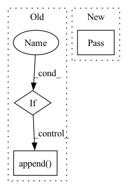

Pattern ID :36189

Before Change
>>> kiri.qa("Where does Sally live?", "Sally lives in London.")
"London"
if context:
return qa(question, context, prev_qa=prev_qa,
local=self._local, api_key=self._api_key, device=self._device)
else:
search_results = self.search(question)
answers = []
if issubclass(self._store._doc_class, ChunkedDocument):
for chunk in search_results.top_chunks[:num_answers]:
answer = qa(question, chunk["chunk"], prev_qa=prev_qa,
local=self._local, api_key=self._api_key, device=self._device)
answers.append((answer, chunk["search_result"]))
else:
for result in search_results.results[:num_answers]:
c_string = result.document.content
answer = qa(question, c_string, prev_qa=prev_qa,
After Change
>>> kiri.qa("Where does Sally live?", "Sally lives in London.")
"London"
pass
// if context:
// return qa(question, context, prev_qa=prev_qa,
// local=self._local, api_key=self._api_key, device=self._device)
// else:
In pattern: SUPERPATTERN
Frequency: 6
Non-data size: 3
Instances
Fragment ID: 102627231
Project Name: kiri-ai/kiri
Commit Name: a1180c5e80edb9dc2a80d959e47b6847622b039e
Time: 2021-01-23
Author: ojasaarkristo@gmail.com
File Name: kiri/core.py
M Class Name: Kiri
N Class Name: Kiri
M Method Name: qa(5)
N Method Name: qa(5)
M Parent Class:
N Parent Class:
M File Name: kiri/core.py
N File Name: kiri/core.py
M Start Line: 130
M End Line: 149
N Start Line: 133
N End Line: 133
'>
Before Change
def on_trace_stop(self, signal, context):
// Framework info
if self._framework:
signal.frameworks.append(self._framework)
After Change
pass
def on_trace_stop(self, signal, context):
pass
def on_trace_read(self, signal, context):
if self._framework:
signal.frameworks.append(self._framework)
'>
Fragment ID: 102627236
Project Name: graphsignal/graphsignal
Commit Name: f525a549b63805461e378a4d76848af7f0272d6b
Time: 2022-12-07
Author: dmitri@graphsignal.com
File Name: graphsignal/recorders/onnxruntime_recorder.py
M Class Name: ONNXRuntimeRecorder
N Class Name: ONNXRuntimeRecorder
M Method Name: on_trace_stop(3)
N Method Name: on_trace_stop(3)
M Parent Class: BaseRecorder
N Parent Class: BaseRecorder
M File Name: graphsignal/recorders/onnxruntime_recorder.py
N File Name: graphsignal/recorders/onnxruntime_recorder.py
M Start Line: 25
M End Line: 26
N Start Line: 24
N End Line: 24
'>
Before Change
uncompress(file_path=file_path.values(),
target_path=self.folder_path + self.name, verbose=verbose)
mode_list: List[str] = ["train"]
if self.valid_set:
mode_list.append("valid")
for mode in mode_list:
os.rename(self.folder_path + self.name + f"/{self.org_folder_name[mode]}/",
self.folder_path + self.name + f"/{mode}/")
if "/" in self.org_folder_name[mode]:
After Change
if self.data_format == "folder":
self.initialize_folder(verbose=verbose, **kwargs)
elif self.data_format in["numpy", "np", "torch", "pytorch", "tensor"]:
pass
def initialize_folder(self, verbose=True, **kwargs):
file_path = self.download()
uncompress(file_path=file_path.values(),
'>
Fragment ID: 102627233
Project Name: ain-soph/trojanzoo
Commit Name: da74b311a7eaeecd326bd50facb5e13304263cb4
Time: 2020-12-13
Author: ain-soph@live.com
File Name: trojanzoo/dataset/imagefolder.py
M Class Name: ImageFolder
N Class Name: ImageFolder
M Method Name: initialize(2)
N Method Name: initialize(2)
M Parent Class: ImageSet
N Parent Class: ImageSet
M File Name: trojanzoo/dataset/imagefolder.py
N File Name: trojanzoo/dataset/imagefolder.py
M Start Line: 32
M End Line: 45
N Start Line: 34
N End Line: 39
'>
Before Change
pass
def on_trace_stop(self, signal, context):
if self._framework:
signal.frameworks.append(self._framework)
After Change
pass
def on_trace_stop(self, signal, context):
pass
def on_trace_read(self, signal, context):
if self._framework:
signal.frameworks.append(self._framework)
'>
Fragment ID: 102627232
Project Name: graphsignal/graphsignal
Commit Name: f525a549b63805461e378a4d76848af7f0272d6b
Time: 2022-12-07
Author: dmitri@graphsignal.com
File Name: graphsignal/recorders/tensorflow_recorder.py
M Class Name: TensorFlowRecorder
N Class Name: TensorFlowRecorder
M Method Name: on_trace_stop(3)
N Method Name: on_trace_stop(3)
M Parent Class: BaseRecorder
N Parent Class: BaseRecorder
M File Name: graphsignal/recorders/tensorflow_recorder.py
N File Name: graphsignal/recorders/tensorflow_recorder.py
M Start Line: 48
M End Line: 49
N Start Line: 48
N End Line: 48
'>
Before Change
pass
def on_trace_stop(self, signal, context):
if self._framework:
signal.frameworks.append(self._framework)
After Change
pass
def on_trace_stop(self, signal, context):
pass
def on_trace_read(self, signal, context):
pass
'>
Fragment ID: 102627235
Project Name: graphsignal/graphsignal
Commit Name: f525a549b63805461e378a4d76848af7f0272d6b
Time: 2022-12-07
Author: dmitri@graphsignal.com
File Name: graphsignal/recorders/jax_recorder.py
M Class Name: JAXRecorder
N Class Name: JAXRecorder
M Method Name: on_trace_stop(3)
N Method Name: on_trace_stop(3)
M Parent Class: BaseRecorder
N Parent Class: BaseRecorder
M File Name: graphsignal/recorders/jax_recorder.py
N File Name: graphsignal/recorders/jax_recorder.py
M Start Line: 24
M End Line: 25
N Start Line: 24
N End Line: 24
'>
Before Change
pass
def on_trace_stop(self, signal, context):
if self._framework:
signal.frameworks.append(self._framework)
def _format_version(version):
major = int(version / 1000)
After Change
pass
def on_trace_stop(self, signal, context):
pass
def on_trace_read(self, signal, context):
if self._framework:
signal.frameworks.append(self._framework)
'>
Fragment ID: 102627234
Project Name: graphsignal/graphsignal
Commit Name: f525a549b63805461e378a4d76848af7f0272d6b
Time: 2022-12-07
Author: dmitri@graphsignal.com
File Name: graphsignal/recorders/pytorch_recorder.py
M Class Name: PyTorchRecorder
N Class Name: PyTorchRecorder
M Method Name: on_trace_stop(3)
N Method Name: on_trace_stop(3)
M Parent Class: BaseRecorder
N Parent Class: BaseRecorder
M File Name: graphsignal/recorders/pytorch_recorder.py
N File Name: graphsignal/recorders/pytorch_recorder.py
M Start Line: 55
M End Line: 58
N Start Line: 55
N End Line: 55